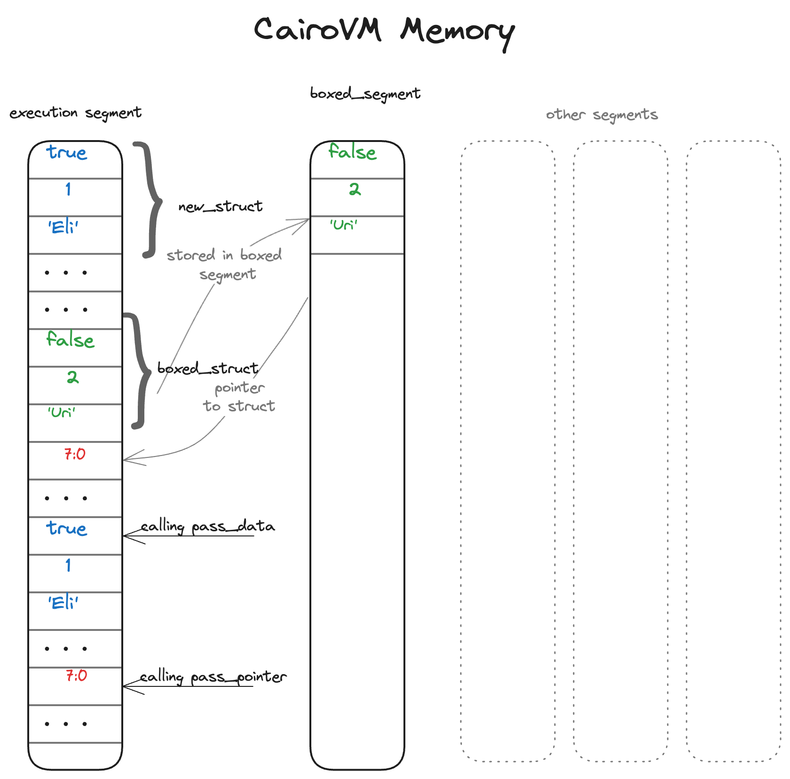

Smart Pointers
A pointer is a general concept for a variable that contains a memory address. This address refers to, or “points at,” some other data. While pointers are a powerful feature, they can also be a source of bugs and security vulnerabilities. For example, a pointer can reference an unassigned memory cell, which means that attempting to access the data at that address would cause the program to crash, making it unprovable. To prevent such issues, Cairo uses Smart Pointers.
Smart pointers are data structures that act like a pointer, but also have additional metadata and capabilities. The concept of smart pointers isn’t unique to Cairo: smart pointers originated in C++ and exist in other languages like Rust as well. In the specific case of Cairo, smart pointers ensure that memory is not addressed in an unsafe way that could cause a program to be unprovable, by providing a safe way to access memory through strict type checking and ownership rules.
Though we didn’t call them as such at the time, we’ve already encountered a few
smart pointers in this book, including Felt252Dict<T> and Array<T> in
Chapter {{#chap common-collections}}. Both these types count as smart pointers
because they own a memory segment and allow you to manipulate it. They also have
metadata and extra capabilities or guarantees. Arrays keep track of their
current length to ensure that existing elements are not overwritten, and that
new elements are only appended to the end.
The Cairo VM memory is composed by multiple segments that can store data, each identified by a unique index. When you create an array, you allocate a new segment in the memory to store the future elements. The array itself is just a pointer to that segment where the elements are stored.
The Box<T> Type to Manipulate Pointers
The principal smart pointer type in Cairo is a box, denoted as Box<T>.
Manually defining boxes allow you to store data in a specific memory segment of
the Cairo VM called the boxed segment. This segment is dedicated to store all
boxed values, and what remains in the execution segment is only a pointer to the
boxed segment. Whenever you instantiate a new pointer variable of type Box<T>,
you append the data of type T to the boxed segment.
Boxes have very little performance overhead, other than writing their inner values to the boxed segment. But they don’t have many extra capabilities either. You’ll use them most often in these situations:
- When you have a type whose size can’t be known at compile time and you want to use a value of that type in a context that requires an exact size
- When you have a large amount of data and you want to transfer ownership but ensure the data won’t be copied when you do so
We’ll demonstrate the first situation in the “Enabling Recursive Types with Boxes” section. In the second case, transferring ownership of a large amount of data can take a long time because the data is copied around in memory. To improve performance in this situation, we can store the large amount of data in the boxed segment using a box type. Then, only the small amount of pointer data is copied around in memory, while the data it references stays in one place on the boxed segment.
Using a Box<T> to Store Data in the Boxed Segment
Before we discuss the boxed segment storage use cases for Box<T>, we’ll cover
the syntax and how to interact with values stored within a Box<T>.
Listing {{#ref basic_box}} shows how to use a box to store a value in the boxed segment:
#[executable]
fn main() {
let b = BoxTrait::new(5_u128);
println!("b = {}", b.unbox())
}
{{#label basic_box}} Listing {{#ref basic_box}}: Storing a
u128 value in the boxed segment using a box
We define the variable b to have the value of a Box that points to the value
5, which is stored in the boxed segment. This program will print b = 5; in
this case, we can access the data in the box similar to how we would if this
data was simply in the execution memory. Putting a single value in a box isn’t
very useful, so you won’t use boxes by themselves in this way very often. Having
values like a single u128 in the execution memory, where they’re stored by
default, is more appropriate in the majority of situations. Let’s look at a case
where boxes allow us to define types that we wouldn’t be allowed to if we didn’t
have boxes.
Enabling Recursive Types with Boxes
A value of recursive type can have another value of the same type as part of itself. Recursive types pose an issue because at compile time because Cairo needs to know how much space a type takes up. However, the nesting of values of recursive types could theoretically continue infinitely, so Cairo can’t know how much space the value needs. Because boxes have a known size, we can enable recursive types by inserting a box in the recursive type definition.
As an example of a recursive type, let’s explore the implementation of a binary tree. The binary tree type we’ll define is straightforward except for the recursion; therefore, the concepts in the example we’ll work with will be useful any time you get into more complex situations involving recursive types.
A binary tree is a tree data structure in which each node has at most two children, which are referred to as the left child and the right child. The last element of a branch is a leaf, which is a node without children.
Listing {{#ref recursive_types_wrong}} shows an attempt to implement a binary
tree of u32 values. Note that this code won’t compile yet because the
BinaryTree type doesn’t have a known size, which we’ll demonstrate.
//TAG: does_not_compile
#[derive(Copy, Drop)]
enum BinaryTree {
Leaf: u32,
Node: (u32, BinaryTree, BinaryTree),
}
#[executable]
fn main() {
let leaf1 = BinaryTree::Leaf(1);
let leaf2 = BinaryTree::Leaf(2);
let leaf3 = BinaryTree::Leaf(3);
let node = BinaryTree::Node((4, leaf2, leaf3));
let _root = BinaryTree::Node((5, leaf1, node));
}
{{#label recursive_types_wrong}} Listing
{{#ref recursive_types_wrong}}: The first attempt at implementing a binary tree
of u32 values
Note: We’re implementing a binary tree that holds only u32 values for the purposes of this example. We could have implemented it using generics, as we discussed in Chapter {{#chap generic-types-and-traits}}, to define a binary tree that could store values of any type.
The root node contains 5 and two child nodes. The left child is a leaf containing 1. The right child is another node containing 4, which in turn has two leaf children: one containing 2 and another containing 3. This structure forms a simple binary tree with a depth of 2.
If we try to compile the code in listing {{#ref recursive_types_wrong}}, we get the following error:
$ scarb build
Compiling listing_recursive_types_wrong v0.1.0 (listings/ch12-advanced-features/listing_recursive_types_wrong/Scarb.toml)
error: Recursive type "(core::integer::u32, listing_recursive_types_wrong::BinaryTree, listing_recursive_types_wrong::BinaryTree)" has infinite size.
--> listings/ch12-advanced-features/listing_recursive_types_wrong/src/lib.cairo:6:5
Node: (u32, BinaryTree, BinaryTree),
^^^^^^^^^^^^^^^^^^^^^^^^^^^^^^^^^^^
error: Recursive type "listing_recursive_types_wrong::BinaryTree" has infinite size.
--> listings/ch12-advanced-features/listing_recursive_types_wrong/src/lib.cairo:11:17
let leaf1 = BinaryTree::Leaf(1);
^^^^^^^^^^^^^^^^^^^
error: Recursive type "(core::integer::u32, listing_recursive_types_wrong::BinaryTree, listing_recursive_types_wrong::BinaryTree)" has infinite size.
--> listings/ch12-advanced-features/listing_recursive_types_wrong/src/lib.cairo:14:33
let node = BinaryTree::Node((4, leaf2, leaf3));
^^^^^^^^^^^^^^^^^
error: could not compile `listing_recursive_types_wrong` due to 3 previous errors
The error shows this type “has infinite size.” The reason is that we’ve defined
BinaryTree with a variant that is recursive: it holds another value of itself
directly. As a result, Cairo can’t figure out how much space it needs to store a
BinaryTree value.
Hopefully, we can fix this error by using a Box<T> to store the recursive
variant of BinaryTree. Because a Box<T> is a pointer, Cairo always knows how
much space a Box<T> needs: a pointer’s size doesn’t change based on the amount
of data it’s pointing to. This means we can put a Box<T> inside the Node
variant instead of another BinaryTree value directly. The Box<T> will point
to the child BinaryTree values that will be stored in their own segment,
rather than inside the Node variant. Conceptually, we still have a binary
tree, created with binary trees holding other binary trees, but this
implementation is now more like placing the items next to one another rather
than inside one another.
We can change the definition of the BinaryTree enum in Listing
{{#ref recursive_types_wrong}} and the usage of the BinaryTree in Listing
{{#ref recursive_types_wrong}} to the code in Listing {{#ref recursive_types}},
which will compile:
mod display;
use display::DebugBinaryTree;
#[derive(Copy, Drop)]
enum BinaryTree {
Leaf: u32,
Node: (u32, Box<BinaryTree>, Box<BinaryTree>),
}
#[executable]
fn main() {
let leaf1 = BinaryTree::Leaf(1);
let leaf2 = BinaryTree::Leaf(2);
let leaf3 = BinaryTree::Leaf(3);
let node = BinaryTree::Node((4, BoxTrait::new(leaf2), BoxTrait::new(leaf3)));
let root = BinaryTree::Node((5, BoxTrait::new(leaf1), BoxTrait::new(node)));
println!("{:?}", root);
}
{{#label recursive_types}} Listing {{#ref recursive_types}}: Defining a recursive Binary Tree using Boxes
The Node variant now holds a (u32, Box<BinaryTree>, Box<BinaryTree>),
indicating that the Node variant will store a u32 value, and two
Box<BinaryTree> values. Now, we know that the Node variant will need a size
of u32 plus the size of the two Box<BinaryTree> values. By using a box,
we’ve broken the infinite, recursive chain, so the compiler can figure out the
size it needs to store a BinaryTree value.
Using Boxes to Improve Performance
Passing pointers between functions allows you to reference data without copying
the data itself. Using boxes can improve performance as it allows you to pass a
pointer to some data from one function to another, without the need to copy the
entire data in memory before performing the function call. Instead of having to
write n values into memory before calling a function, only a single value is
written, corresponding to the pointer to the data. If the data stored in the box
is very large, the performance improvement can be significant, as you would save
n-1 memory operations before each function call.
Note: This only works if the data stored in the box is not mutated. If the data is mutated, a new
Box<T>will be created, which will require copying the data to the new box.
Let’s take a look at the code in Listing {{#ref box}}, which shows two ways of passing data to a function: by value and by pointer.
#[derive(Drop)]
struct Cart {
paid: bool,
items: u256,
buyer: ByteArray,
}
fn pass_data(cart: Cart) {
println!("{} is shopping today and bought {} items", cart.buyer, cart.items);
}
fn pass_pointer(cart: Box<Cart>) {
let cart = cart.unbox();
println!("{} is shopping today and bought {} items", cart.buyer, cart.items);
}
#[executable]
fn main() {
let new_struct = Cart { paid: true, items: 1, buyer: "Eli" };
pass_data(new_struct);
let new_box = BoxTrait::new(Cart { paid: false, items: 2, buyer: "Uri" });
pass_pointer(new_box);
}
{{#label box}} Listing {{#ref box}}: Storing large amounts of data in a box for performance.
The main function includes 2 function calls:
pass_datathat takes a variable of typeCart.pass_pointerthat takes a pointer of typeBox<Cart>.
When passing data to a function, the entire data is copied into the last
available memory cells right before the function call. Calling pass_data will
copy all 3 fields of Cart to memory, while pass_pointer only requires the
copy of the new_box pointer which is of size 1.

The illustration above demonstrates how the memory behaves in both cases. The
first instance of Cart is stored in the execution segment, and we need to copy
all its fields to memory before calling the pass_data function. The second
instance of Cart is stored in the boxed segment, and the pointer to it is
stored in the execution segment. When calling the pass_pointer function, only
the pointer to the struct is copied to memory right before the function call. In
both cases, however, instantiating the struct will store all its values in the
execution segment: the boxed segment can only be filled with data taken from the
execution segment.
The Nullable<T> Type for Dictionaries
Nullable<T> is another type of smart pointer that can either point to a value
or be null in the absence of value. It is defined at the Sierra level. This
type is mainly used in dictionaries that contain types that don’t implement the
zero_default method of the Felt252DictValue<T> trait (i.e., arrays and
structs).
If we try to access an element that does not exist in a dictionary, the code
will fail if the zero_default method cannot be called.
Chapter {{#chap common-collections}} about
dictionaries thoroughly explains how to store a Span<felt252> variable inside
a dictionary using the Nullable<T> type. Please refer to it for further
information.
{{#quiz ../quizzes/ch12-02-smart_pointers.toml}}